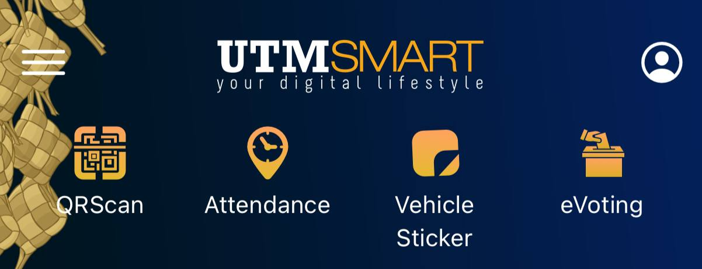
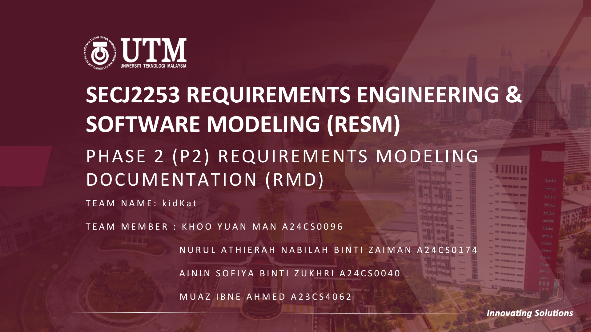
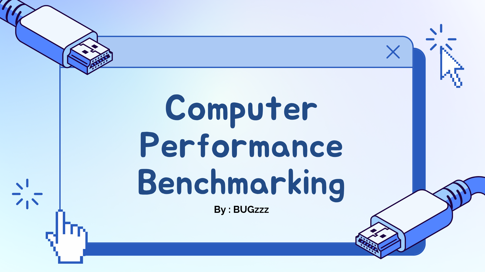

My Profile
Projects

Collaborated with UTMDigital as part of the JPMPP System Unit to deploy a secure feature for the 2025/2026 Campus Election.

Collaborated within 4 person team to analyze user needs and develop detailed system architecture models including comprehensive UML diagrams and use cases. This project demonstrated strong technical writing skills and the ability to translate conceptual requirements into actionable development blueprints.

Conducted an in depth computer architecture study to evaluate and compare hardware performance across multiple systems. Using a few benchmarking software, our team analyzed key metrics such as CPU throughput and memory bandwidth to identify system bottlenecks. This project highlighted my ability to analyze low level system operations and translate complex hardware data into clear, actionable insights